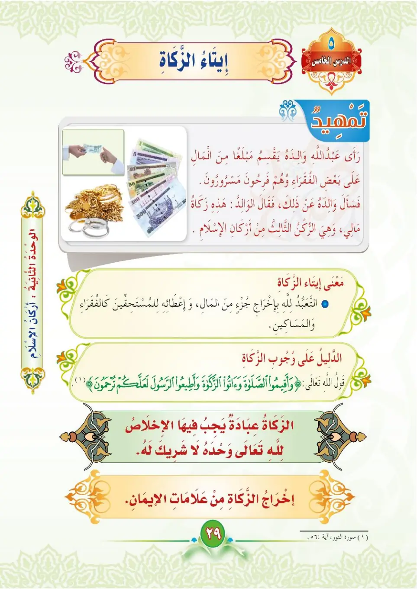
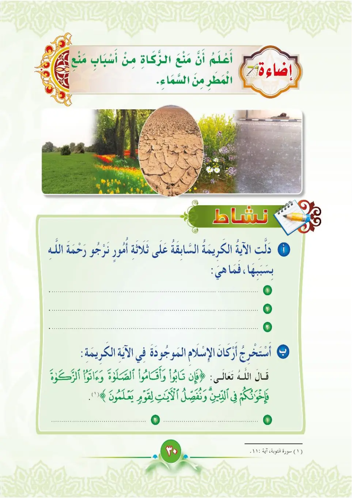
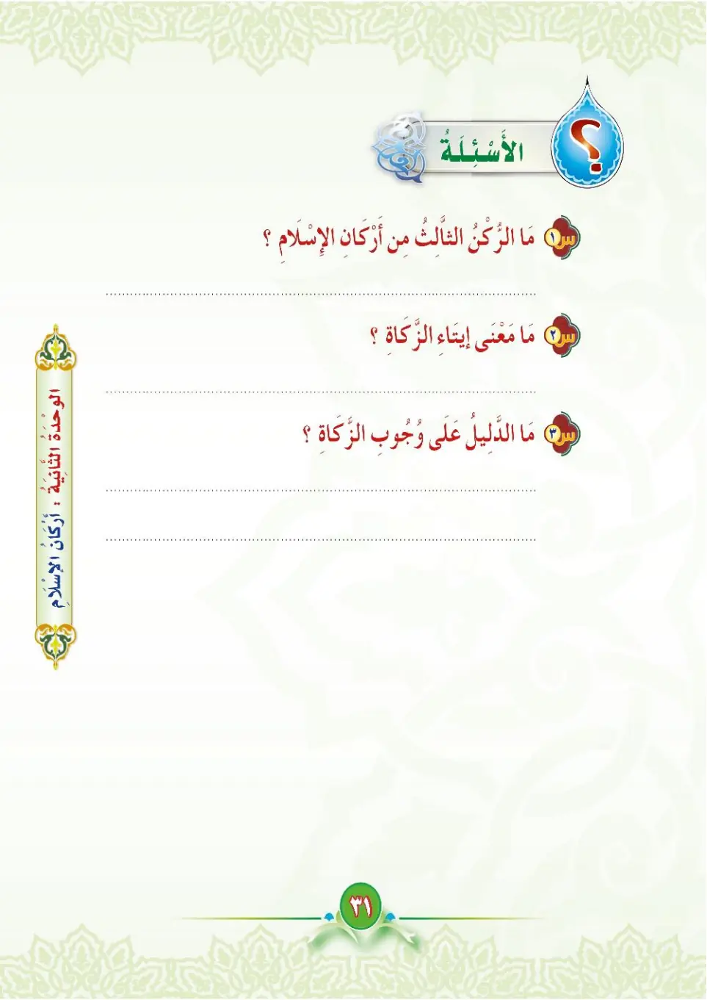

Stage 3·المرحلة الثالثة⭐ Unit 2
إِيتَاءُ الزَّكَاةِ Giving Zakat
From the Textbookpp. 30–32



الركن الرابع من أركان الإسلام: إيتاء الزكاة. الزكاة: أن يُخرِجَ المرءُ نصيبًا معلومًا من ماله لمستحقيه.
Ar-ruknu ar-rabi'u min arkani al-islam: ita'u az-zakah. Az-zakatu: an yakhrija al-maru nasiban ma'luman min malihi li-mustahiqqihi.
The fourth pillar of Islam: giving zakat.
Zakat: that a person gives a fixed portion of his wealth to those who deserve it.
இஸ்லாத்தின் நான்காம் தூண்: ஜகாத் கொடுத்தல்.
ஜகாத்: ஒருவன் தன் செல்வத்தில் ஒரு குறிப்பிட்ட பகுதியை தகுதியானவர்களுக்குக் கொடுப்பது.
من أركان الزكاة: ١- النصاب: وهو المال الذي تجب فيه الزكاة. ٢- الحول: وهو مضيّ سنة كاملة عليه. ٣- المستحقون: وهم الأصناف التي تستحق الزكاة.
Min arkani az-zakah: an-nisab wal-hawl wal-mustahiqqun sab'atu asnanif.
Pillars of zakat:
1. The nisab: the minimum wealth at which zakat is due.
2. The hawl: one full year has passed over it.
3. The deserving recipients: seven categories.
ஜகாத்தின் தூண்கள்:
1. நஸாப்: ஜகாத் கடமையான குறைந்தபட்ச செல்வம்.
2. ஹவ்ல்: ஒரு முழு ஆண்டு கடந்திருத்தல்.
3. தகுதியானவர்கள்: ஏழு பிரிவினர்.
لله أسوة حسنة في الإنفاق؛ فكما يحب أن يُنقِعَ خيره، يُحبُّ الإنفاق في سبيله.
Lillahu uswatun hasanatin fil-infāqi; fa-kama yuhibbu an yunfi'a khayrahu yuhhibbu al-infāqa fi sabilihi.
Allah sets a good example in spending; just as He loves that His blessings be used, He loves spending in His cause.
அல்லாஹ் செலவிடுவதில் நல்ல முன்மாதிரியாக இருக்கிறான்; அவனது நல்லருட்களைப் பயன்படுத்துவதை அவன் விரும்புவது போல, அவனது பாதையில் செலவிடுவதையும் விரும்புகிறான்.